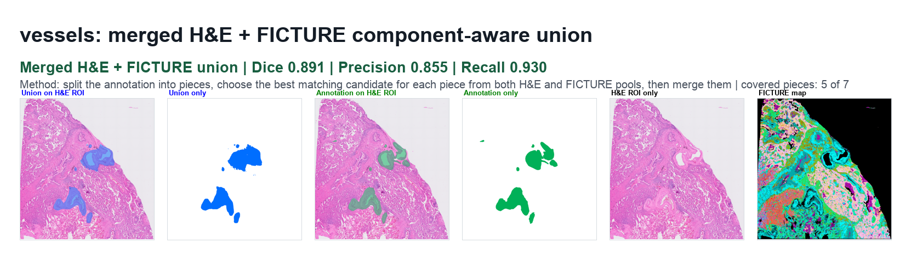
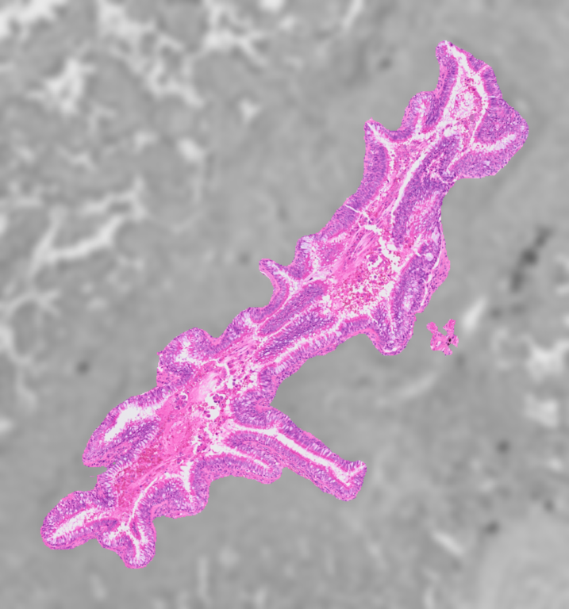
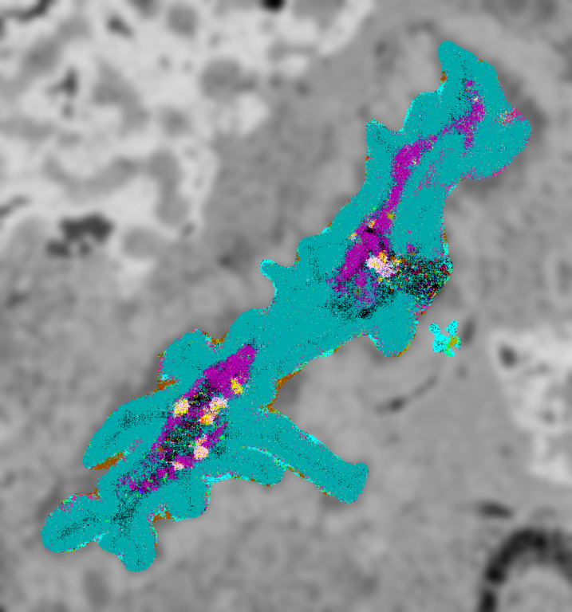
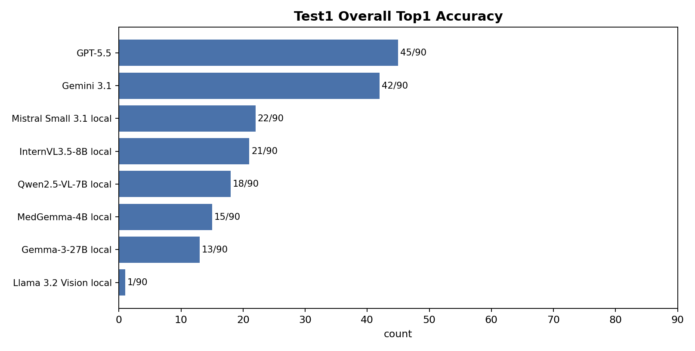
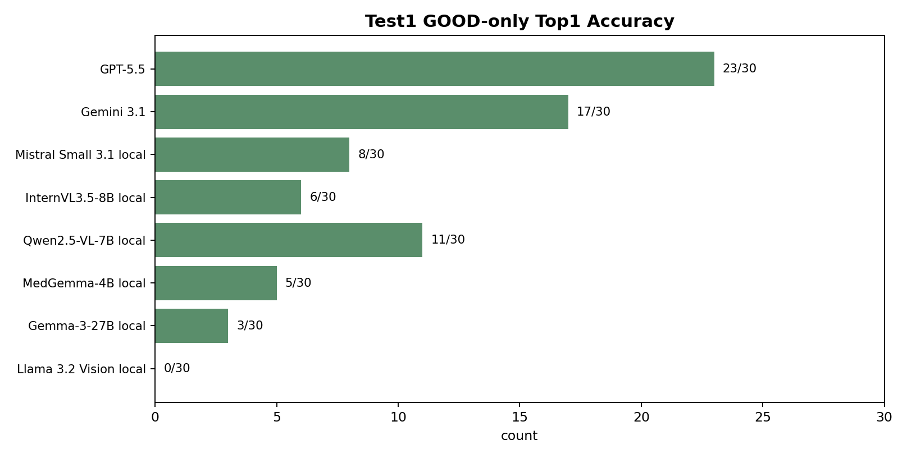
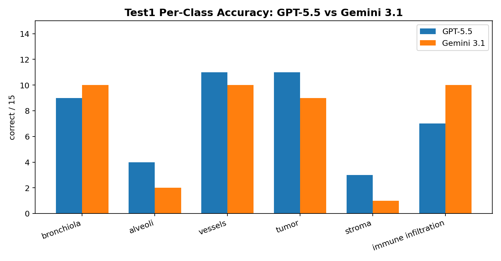
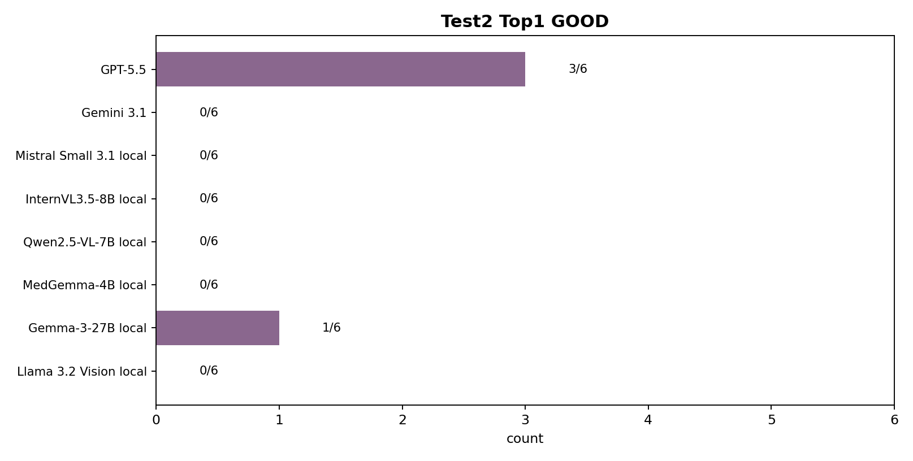
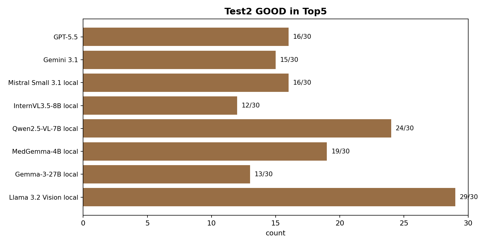

一句话结论
结论：新的 component-aware union 说明 pool 里确实有可以拼起来的好 mask，尤其是 bronchiola 和 vessels；VLM 方面，GPT-5.5 是目前最稳定的模型，Test1 组织识别和 Test2 同类候选排序都最好。Gemini 3.1 的组织识别还可以，但 Test2 里经常给很多 candidate 一样的分数，所以排序不稳定。
- Union: bronchiola merged union Dice 0.887 / Precision 0.881 / Recall 0.892；vessels merged union Dice 0.891 / Precision 0.855 / Recall 0.930。
- Test1: Cross-Label Tissue Classification，看 VLM 能不能认出 candidate 是哪种组织。GPT-5.5 是 45/90，Gemini 3.1 是 42/90。
- Test2: Same-Class Candidate Mask Retrieval，看 VLM 能不能在同一组织类里把 GOOD mask 排到前面。GPT-5.5 是 Top1 GOOD 3/6，GOOD in Top5 16/30。
实验设计
数据和 pool
H&E 是原始病理图。FICTURE 是对齐到同一个 H&E ROI 的空间分子 / cell-type 颜色图。
所有 FICTURE 相关结果只使用 PASS_OFFICIAL 数据，不使用旧的 debug/deprecated FICTURE root。
VLM 测试使用 90 个 paired candidate：6 个组织类，每类 15 个 candidate；GOOD/MID/BAD 只用于抽样和后验评价，模型看不到这些标签。
模型看到什么、输出什么
每个 candidate 有两张图：H&E gray reverse-blur crop 和 official FICTURE gray reverse-blur crop。candidate 内部保持彩色清晰，外部变成灰色并模糊。
模型输出六个 0-100 的分数：bronchiola、alveoli、vessels、tumor、stroma、immune infiltration。
Test1 用最高分作为预测组织类；Test2 在同一个组织类内部按这个类的分数排序。
官方 FICTURE 核对
Part A. 新 pool 的 component-aware union 可视化
目的：检查原来的 single best mask 是否低估了 candidate pool，因为有些 annotation 不是一整块，而是多个分开的组织块。
做法：把 annotation 拆成 connected components；每个 component 分别从 H&E pool 和 FICTURE pool 里找最匹配的 candidate；最后把这些 candidate union 起来。
注意：这个 union 是 oracle / 诊断实验，不是 VLM 自动选择出来的结果。它回答的是：pool 里有没有足够好的小块 mask 可以拼起来。
指标：Dice 是整体重叠；Precision 是预测出来的区域有多少是真的；Recall 是 annotation 有多少被覆盖。
哪些类适合做 component-aware union？
| 组织类别 | GT 连通块数 | 重要块数 | 单 mask 最好来源 | 单 mask Dice | 单 mask Precision | 单 mask Recall | 有可用 candidate 的重要块 | 是否建议 union | 判断理由 |
|---|---|---|---|---|---|---|---|---|---|
| bronchiola | 3 | 3 | FICTURE | 0.758 | 0.868 | 0.674 | 3/3 | Yes | Multiple meaningful pieces, single-best recall is capped, and most pieces have usable candidates. |
| alveoli | 1 | 1 | HE | 0.677 | 0.711 | 0.647 | No | GT does not have multiple meaningful pieces. | |
| vessels | 7 | 2 | HE | 0.628 | 0.822 | 0.507 | 2/2 | Yes | Multiple meaningful pieces, single-best recall is capped, and most pieces have usable candidates. |
| tumor | 185 | 4 | FICTURE | 0.527 | 0.366 | 0.946 | 3/4 | Maybe | GT has multiple pieces, but the best single mask is not clearly recall-limited. |
| stroma | 385 | 4 | FICTURE | 0.528 | 0.371 | 0.911 | 3/4 | Maybe | GT has multiple pieces, but the best single mask is not clearly recall-limited. |
| immune infiltration | 163 | 4 | HE | 0.301 | 0.337 | 0.273 | 4/4 | Maybe | GT has multiple pieces, but the best single mask is not clearly recall-limited. |
H&E + FICTURE merged union 最终结果
| 组织类别 | Dice | Precision | Recall | 覆盖块数 | 总块数 |
|---|---|---|---|---|---|
| bronchiola | 0.887 | 0.881 | 0.892 | 3 | 3 |
| vessels | 0.891 | 0.855 | 0.930 | 5 | 7 |
最终 union 图
每张图从左到右是：union on H&E、union mask only、annotation on H&E、annotation mask only、H&E ROI、FICTURE map。

每个 component 具体用了哪个 candidate
| 组织类别 | 块 | 来源 | setting | candidate id | 单块 Dice | 单块 Precision | 单块 Recall |
|---|---|---|---|---|---|---|---|
| bronchiola | C1 | FICTURE | base_official_points_step32 | 311.0 | 0.893 | 0.885 | 0.900 |
| bronchiola | C2 | FICTURE | medical_box192_s64_m2048 | 356.0 | 0.841 | 0.815 | 0.868 |
| bronchiola | C3 | HE | medical_official_points_step24 | 2646.0 | 0.910 | 0.954 | 0.869 |
| vessels | C1 | FICTURE | medical_box512_s160_m2048 | 38.0 | 0.949 | 0.971 | 0.928 |
| vessels | C2 | HE | base_box384_s128_m1536 | 59.0 | 0.811 | 0.706 | 0.952 |
| vessels | C3 | HE | medical_point80_m1024_p500 | 114.0 | 0.887 | 0.811 | 0.980 |
| vessels | C4 | not selected | not selected by quality gate | nan | nan | nan | |
| vessels | C5 | HE | medical_official_points_step24 | 3057.0 | 0.931 | 0.983 | 0.884 |
| vessels | C6 | FICTURE | base_point80_m1536_p700 | 83.0 | 0.763 | 0.667 | 0.891 |
| vessels | C7 | not selected | not selected by quality gate | nan | nan | nan |
展开：HE/FICTURE 单独 pool 的 union oracle 表
| 组织类别 | pool 来源 | 单 mask Dice | 单 mask Precision | 单 mask Recall | union Dice | union Precision | union Recall | 块数 | 选中的 candidates | 单 mask 最好 candidate |
|---|---|---|---|---|---|---|---|---|---|---|
| bronchiola | HE | 0.646 | 0.733 | 0.577 | 0.781 | 0.756 | 0.807 | 3 | C1:base_box512_s160_m1536/candidate_052; C2:base_box128_s48_m1536/candidate_267; C3:medical_official_points_step24/candidate_2646 | base_box512_s160_m1536/candidate_052 |
| bronchiola | FICTURE | 0.758 | 0.868 | 0.673 | 0.886 | 0.882 | 0.890 | 3 | C1:base_official_points_step32/candidate_311; C2:medical_box192_s64_m2048/candidate_356; C3:medical_point48_m1024_p900/candidate_108 | base_official_points_step32/candidate_303 |
| vessels | HE | 0.627 | 0.822 | 0.507 | 0.884 | 0.828 | 0.948 | 7 | C1:medical_box512_s160_m2048/candidate_029; C2:base_box384_s128_m1536/candidate_059; C3:medical_point80_m1024_p500/candidate_114; C4:base_box160_s64_m2048/candidate_386; C5:medical_official_points_step24/candidate_3057; C6:base_official_points_step32/candidate_270; C7:base_official_points_step24/candidate_202 | base_box512_s160_m1536/candidate_043 |
| vessels | FICTURE | 0.626 | 0.921 | 0.474 | 0.871 | 0.877 | 0.865 | 7 | C1:medical_box512_s160_m2048/candidate_038; C2:base_official_boxes_b384_s96/candidate_085; C3:base_point80_m1024_p500/candidate_029; C4:medical_box160_s64_m1536/candidate_408; C5:medical_point80_m1536_p700/candidate_121; C6:base_point80_m1536_p700/candidate_083; C7:base_point64_m1536_p900/candidate_108 | medical_box512_s160_m1536/candidate_025 |
展开：annotation component 大小
| 组织类别 | 块 | 面积像素 | 占 GT 百分比 | bbox | bbox 尺寸 |
|---|---|---|---|---|---|
| bronchiola | C1 | 226254 | 73.5 | 372,1241,1257,2209 | 885x968 |
| bronchiola | C2 | 46505 | 15.1 | 2005,3025,2281,3327 | 276x302 |
| bronchiola | C3 | 35227 | 11.4 | 1343,795,1550,1040 | 207x245 |
| vessels | C1 | 260883 | 47.6 | 789,2099,1574,2771 | 785x672 |
| vessels | C2 | 229761 | 41.9 | 1480,1033,2155,1696 | 675x663 |
| vessels | C3 | 23292 | 4.2 | 1563,2692,1703,2962 | 140x270 |
| vessels | C4 | 21763 | 4.0 | 2047,1451,2237,1621 | 190x170 |
| vessels | C5 | 5559 | 1.0 | 1271,1628,1341,1725 | 70x97 |
| vessels | C6 | 4017 | 0.7 | 1622,1090,1695,1170 | 73x80 |
| vessels | C7 | 3088 | 0.6 | 417,988,519,1035 | 102x47 |
Part B. VLM 输入示例和 prompt
两个测试都使用同一个六类 score prompt。模型看两张 crop 和 FICTURE 的 RGB / Major Compartment / cell type 说明，然后返回六个组织类分数。
示例输入图


示例 candidate：ficture__ficture_official_11938226__base_official_points_step32__303；隐藏评价 bucket：GOOD；来源：ficture
System prompt
You are a careful pathology image classifier. You will see two aligned crops of the same candidate region: H&E and FICTURE. Score which tissue class the candidate region most likely belongs to. Return only valid JSON.
User prompt template
You are given two aligned crops of the same candidate region: Image 1: H&E gray reverse-blur crop. The candidate region is sharp and full color; the outside region is grayscale and blurred. Image 2: official FICTURE gray reverse-blur crop. The candidate region is sharp and full color; the outside region is grayscale and blurred. The FICTURE colors use this legend: This color legend applies only to Image 2, the FICTURE crop. It does not apply to Image 1. The pink and purple colors in H&E are normal tissue staining, not FICTURE tumor colors. Color 0: RGB 255,204,255; Major Compartment: tumor-like epithelial / AT2-like malignant epithelial; cell type: tumor epithelial. Color 1: RGB 0,255,255; Major Compartment: vascular smooth muscle / myofibroblast / vessel wall stroma; cell type: smooth muscle vessel wall. Color 2: RGB 255,255,0; Major Compartment: epithelial tumor-like / mucinous-glandular epithelial; cell type: epithelial tumor-like. Color 3: RGB 255,84,0; Major Compartment: alveolar epithelial pneumocyte / AT2-like; cell type: alveolar epithelial. Color 4: RGB 0,255,84; Major Compartment: lymphoid immune with alveolar epithelial admixture; cell type: immune/alveolar mixed. Color 5: RGB 84,0,255; Major Compartment: alveolar epithelial pneumocyte / AT1-AT2-like; cell type: alveolar epithelial. Color 6: RGB 170,0,170; Major Compartment: SPP1/APOE macrophage; cell type: macrophage. Color 7: RGB 0,170,170; Major Compartment: bronchiolar secretory / club airway epithelium; cell type: bronchiolar secretory. Color 8: RGB 170,170,0; Major Compartment: plasma cell / B lineage; cell type: plasma cell. Color 9: RGB 255,0,127; Major Compartment: pulmonary neuroendocrine / airway basal-like rare epithelial; cell type: neuroendocrine airway. Color 10: RGB 153,76,0; Major Compartment: IgA plasma cell; cell type: IgA plasma cell. Color 11: RGB 0,115,0; Major Compartment: IgM plasma/B cell; cell type: IgM plasma cell. Score how likely this candidate region belongs to each tissue class. Tissue classes: bronchiola = bronchiolar airway tissue, airway-like lumen, epithelial lining. alveoli = alveolar lung parenchyma, open air spaces, thin septa. vessels = blood vessel or vascular wall, lumen-like vascular structure, smooth muscle vessel wall. tumor = malignant epithelial tumor region. Prefer tumor-like epithelial morphology and tumor epithelial FICTURE color support. stroma = stromal / mesenchymal tissue, collagen, fibroblast, smooth-muscle-like tissue. Treat stroma as a broad tissue compartment. immune_infiltration = immune-cell-rich region, small round-cell aggregates, macrophage / lymphoid / plasma-cell FICTURE color support. Rules: - Return exactly one JSON object. - Use exactly these six keys: bronchiola, alveoli, vessels, tumor, stroma, immune_infiltration. - Each value must be an integer from 0 to 100. - Higher means more likely. - Use the full 0-100 range. - Do not include explanation, reason, precision, recall, Dice, markdown, code fences, or extra text. - Do not give all classes the same score unless there is truly no visible evidence.
Part C. Test1: Cross-Label Tissue Classification
问题：VLM 能不能看懂这个 candidate 是什么组织类型？
评价：每个 candidate 一次打六类分数，分数最高的类就是预测 label；如果最高分并列，则这一行不算正确。
总体结果
| 模型 | Test1 Top1 Accuracy | Test1 GOOD-only Top1 Accuracy | tie/coarse warnings |
|---|---|---|---|
| GPT-5.5 | 45/90 | 23/30 | 0 |
| Gemini 3.1 | 42/90 | 17/30 | 4 |
| Mistral Small 3.1 local | 22/90 | 8/30 | 3 |
| InternVL3.5-8B local | 21/90 | 6/30 | 2 |
| Qwen2.5-VL-7B local | 18/90 | 11/30 | 3 |
| MedGemma-4B local | 15/90 | 5/30 | 2 |
| Gemma-3-27B local | 13/90 | 3/30 | 0 |
| Llama 3.2 Vision local | 1/90 | 0/30 | 6 |
| MiniCPM-V 4.5 local | 0/0 | 0/0 | 0 |


GPT-5.5 和 Gemini 3.1 每个 class 的结果
每类总共 15 个 candidate，其中 GOOD-only 是只看每类 5 个 GOOD candidate。
| 模型 | 组织类别 | Top1 Accuracy | GOOD-only Top1 Accuracy |
|---|---|---|---|
| GPT-5.5 | bronchiola | 9/15 | 5/5 |
| GPT-5.5 | alveoli | 4/15 | 3/5 |
| GPT-5.5 | vessels | 11/15 | 5/5 |
| GPT-5.5 | tumor | 11/15 | 5/5 |
| GPT-5.5 | stroma | 3/15 | 1/5 |
| GPT-5.5 | immune infiltration | 7/15 | 4/5 |
| Gemini 3.1 | bronchiola | 10/15 | 5/5 |
| Gemini 3.1 | alveoli | 2/15 | 0/5 |
| Gemini 3.1 | vessels | 10/15 | 5/5 |
| Gemini 3.1 | tumor | 9/15 | 3/5 |
| Gemini 3.1 | stroma | 1/15 | 0/5 |
| Gemini 3.1 | immune infiltration | 10/15 | 4/5 |

展开：所有模型每类 Test1 结果
| 模型 | 组织类别 | N | 正确数 | 比例 |
|---|---|---|---|---|
| GPT-5.5 | alveoli | 15 | 4 | 0.267 |
| GPT-5.5 | bronchiola | 15 | 9 | 0.600 |
| GPT-5.5 | immune infiltration | 15 | 7 | 0.467 |
| GPT-5.5 | stroma | 15 | 3 | 0.200 |
| GPT-5.5 | tumor | 15 | 11 | 0.733 |
| GPT-5.5 | vessels | 15 | 11 | 0.733 |
| Gemini 3.1 | alveoli | 15 | 2 | 0.133 |
| Gemini 3.1 | bronchiola | 15 | 10 | 0.667 |
| Gemini 3.1 | immune infiltration | 15 | 10 | 0.667 |
| Gemini 3.1 | stroma | 15 | 1 | 0.067 |
| Gemini 3.1 | tumor | 15 | 9 | 0.600 |
| Gemini 3.1 | vessels | 15 | 10 | 0.667 |
| Mistral Small 3.1 local | alveoli | 15 | 9 | 0.600 |
| Mistral Small 3.1 local | bronchiola | 15 | 7 | 0.467 |
| Mistral Small 3.1 local | immune infiltration | 15 | 0 | 0.000 |
| Mistral Small 3.1 local | stroma | 15 | 0 | 0.000 |
| Mistral Small 3.1 local | tumor | 15 | 5 | 0.333 |
| Mistral Small 3.1 local | vessels | 15 | 1 | 0.067 |
| InternVL3.5-8B local | alveoli | 15 | 9 | 0.600 |
| InternVL3.5-8B local | bronchiola | 15 | 0 | 0.000 |
| InternVL3.5-8B local | immune infiltration | 15 | 1 | 0.067 |
| InternVL3.5-8B local | stroma | 15 | 1 | 0.067 |
| InternVL3.5-8B local | tumor | 15 | 5 | 0.333 |
| InternVL3.5-8B local | vessels | 15 | 5 | 0.333 |
| Qwen2.5-VL-7B local | alveoli | 15 | 10 | 0.667 |
| Qwen2.5-VL-7B local | bronchiola | 15 | 4 | 0.267 |
| Qwen2.5-VL-7B local | immune infiltration | 15 | 0 | 0.000 |
| Qwen2.5-VL-7B local | stroma | 15 | 0 | 0.000 |
| Qwen2.5-VL-7B local | tumor | 15 | 4 | 0.267 |
| Qwen2.5-VL-7B local | vessels | 15 | 0 | 0.000 |
| MedGemma-4B local | alveoli | 15 | 2 | 0.133 |
| MedGemma-4B local | bronchiola | 15 | 0 | 0.000 |
| MedGemma-4B local | immune infiltration | 15 | 0 | 0.000 |
| MedGemma-4B local | stroma | 15 | 0 | 0.000 |
| MedGemma-4B local | tumor | 15 | 13 | 0.867 |
| MedGemma-4B local | vessels | 15 | 0 | 0.000 |
| Gemma-3-27B local | alveoli | 15 | 2 | 0.133 |
| Gemma-3-27B local | bronchiola | 15 | 3 | 0.200 |
| Gemma-3-27B local | immune infiltration | 15 | 1 | 0.067 |
| Gemma-3-27B local | stroma | 15 | 0 | 0.000 |
| Gemma-3-27B local | tumor | 15 | 5 | 0.333 |
| Gemma-3-27B local | vessels | 15 | 2 | 0.133 |
| Llama 3.2 Vision local | alveoli | 15 | 0 | 0.000 |
| Llama 3.2 Vision local | bronchiola | 15 | 0 | 0.000 |
| Llama 3.2 Vision local | immune infiltration | 15 | 1 | 0.067 |
| Llama 3.2 Vision local | stroma | 15 | 0 | 0.000 |
| Llama 3.2 Vision local | tumor | 15 | 0 | 0.000 |
| Llama 3.2 Vision local | vessels | 15 | 0 | 0.000 |
Part D. Test2: Same-Class Candidate Mask Retrieval
问题：如果我们已经知道目标组织类，VLM 能不能在这一类的 15 个 candidate 里把 GOOD mask 排到前面？
评价：直接复用 Test1 的六类分数。例如 bronchiola 的 15 个 candidate 就按 bronchiola score 排序，vessels 的 15 个 candidate 就按 vessels score 排序。
- Top1 GOOD: 6 个组织类里，有几个类的第一名是唯一最高分，并且这个第一名属于隐藏 GOOD bucket。满分 6/6。
- GOOD in Top5: 6 个类的 top5 一共 30 个位置里，有多少个 hidden GOOD candidate。满分 30/30。
- 分数种类: 15 个 candidate 里模型用了多少个不同分数；太少说明模型打分很粗，容易 tie。
总体结果
| 模型 | Test2 Top1 GOOD | Test2 GOOD in Top5 | tie/coarse warnings |
|---|---|---|---|
| GPT-5.5 | 3/6 | 16/30 | 0 |
| Gemini 3.1 | 0/6 | 15/30 | 4 |
| Mistral Small 3.1 local | 0/6 | 16/30 | 3 |
| InternVL3.5-8B local | 0/6 | 12/30 | 2 |
| Qwen2.5-VL-7B local | 0/6 | 24/30 | 3 |
| MedGemma-4B local | 0/6 | 19/30 | 2 |
| Gemma-3-27B local | 1/6 | 13/30 | 0 |
| Llama 3.2 Vision local | 0/6 | 29/30 | 6 |
| MiniCPM-V 4.5 local | 0/6 | 0 |


GPT-5.5 Test2 详细结果
| 组织类别 | 候选数 | Top1 是否 GOOD | Top1 bucket | GOOD in Top5 | Best GOOD rank | 分数种类 | Top1 并列数 | tie 警告 | Top1 分数 | Top1 candidate |
|---|---|---|---|---|---|---|---|---|---|---|
| bronchiola | 15 | True | GOOD | 3 | 1 | 8/15 | 1 | 95 | ficture/base_point64_m1536_p900/49 | |
| alveoli | 15 | True | GOOD | 4 | 1 | 13/15 | 1 | 85 | he/base_box512_s160_m2048/29 | |
| vessels | 15 | False | MID | 3 | 3 | 8/15 | 2 | 98 | he/base_box256_s96_m1536/123 | |
| tumor | 15 | False | MID | 2 | 3 | 7/15 | 1 | 94 | he/base_box512_s160_m2048/11 | |
| stroma | 15 | True | GOOD | 1 | 1 | 10/15 | 1 | 86 | he/base_point64_m1024_p700/6 | |
| immune infiltration | 15 | False | MID | 3 | 3 | 10/15 | 2 | 90 | ficture/base_box128_s48_m1536/327 |
Gemini 3.1 Test2 详细结果
| 组织类别 | 候选数 | Top1 是否 GOOD | Top1 bucket | GOOD in Top5 | Best GOOD rank | 分数种类 | Top1 并列数 | tie 警告 | Top1 分数 | Top1 candidate |
|---|---|---|---|---|---|---|---|---|---|---|
| bronchiola | 15 | False | GOOD | 5 | 1 | 2/15 | 10 | coarse or tied scores | 95 | ficture/base_official_points_step32/303 |
| alveoli | 15 | False | MID | 3 | 3 | 7/15 | 2 | 95 | ficture/base_box128_s48_m1536/176 | |
| vessels | 15 | False | GOOD | 3 | 1 | 5/15 | 6 | coarse or tied scores | 100 | ficture/medical_box512_s160_m1536/25 |
| tumor | 15 | False | MID | 0 | 6 | 4/15 | 5 | coarse or tied scores | 95 | ficture/base_box384_s128_m1536/15 |
| stroma | 15 | False | MID | 1 | 5 | 8/15 | 1 | 95 | ficture/base_box384_s128_m2048/64 | |
| immune infiltration | 15 | False | GOOD | 3 | 1 | 7/15 | 8 | coarse or tied scores | 95 | he/medical_point64_m1024_p700/103 |
展开：所有模型 Test2 逐类结果
| 模型 | 组织类别 | 候选数 | Top1 是否 GOOD | Top1 bucket | GOOD in Top5 | Best GOOD rank | 分数种类 | Top1 并列数 | tie 警告 | Top1 分数 | Top1 candidate |
|---|---|---|---|---|---|---|---|---|---|---|---|
| GPT-5.5 | alveoli | 15 | True | GOOD | 4 | 1 | 13/15 | 1 | 85 | he/base_box512_s160_m2048/29 | |
| GPT-5.5 | bronchiola | 15 | True | GOOD | 3 | 1 | 8/15 | 1 | 95 | ficture/base_point64_m1536_p900/49 | |
| GPT-5.5 | immune infiltration | 15 | False | MID | 3 | 3 | 10/15 | 2 | 90 | ficture/base_box128_s48_m1536/327 | |
| GPT-5.5 | stroma | 15 | True | GOOD | 1 | 1 | 10/15 | 1 | 86 | he/base_point64_m1024_p700/6 | |
| GPT-5.5 | tumor | 15 | False | MID | 2 | 3 | 7/15 | 1 | 94 | he/base_box512_s160_m2048/11 | |
| GPT-5.5 | vessels | 15 | False | MID | 3 | 3 | 8/15 | 2 | 98 | he/base_box256_s96_m1536/123 | |
| Gemini 3.1 | alveoli | 15 | False | MID | 3 | 3 | 7/15 | 2 | 95 | ficture/base_box128_s48_m1536/176 | |
| Gemini 3.1 | bronchiola | 15 | False | GOOD | 5 | 1 | 2/15 | 10 | coarse or tied scores | 95 | ficture/base_official_points_step32/303 |
| Gemini 3.1 | immune infiltration | 15 | False | GOOD | 3 | 1 | 7/15 | 8 | coarse or tied scores | 95 | he/medical_point64_m1024_p700/103 |
| Gemini 3.1 | stroma | 15 | False | MID | 1 | 5 | 8/15 | 1 | 95 | ficture/base_box384_s128_m2048/64 | |
| Gemini 3.1 | tumor | 15 | False | MID | 0 | 6 | 4/15 | 5 | coarse or tied scores | 95 | ficture/base_box384_s128_m1536/15 |
| Gemini 3.1 | vessels | 15 | False | GOOD | 3 | 1 | 5/15 | 6 | coarse or tied scores | 100 | ficture/medical_box512_s160_m1536/25 |
| Mistral Small 3.1 local | alveoli | 15 | False | GOOD | 4 | 1 | 3/15 | 13 | coarse or tied scores | 80 | he/base_box384_s128_m1536/13 |
| Mistral Small 3.1 local | bronchiola | 15 | False | GOOD | 4 | 1 | 2/15 | 7 | coarse or tied scores | 80 | ficture/base_point64_m1024_p700/29 |
| Mistral Small 3.1 local | immune infiltration | 15 | False | MID | 0 | 8 | 4/15 | 3 | 30 | ficture/base_box128_s48_m1536/327 | |
| Mistral Small 3.1 local | stroma | 15 | False | GOOD | 5 | 1 | 5/15 | 7 | coarse or tied scores | 30 | ficture/base_official_points_step24/85 |
| Mistral Small 3.1 local | tumor | 15 | False | MID | 1 | 4 | 8/15 | 3 | 90 | ficture/base_box384_s128_m1536/15 | |
| Mistral Small 3.1 local | vessels | 15 | False | MID | 2 | 4 | 4/15 | 1 | 90 | he/base_box192_s64_m1536/146 | |
| InternVL3.5-8B local | alveoli | 15 | False | MID | 0 | 6 | 5/15 | 5 | coarse or tied scores | 80 | ficture/base_box128_s48_m1536/176 |
| InternVL3.5-8B local | bronchiola | 15 | False | GOOD | 5 | 1 | 1/15 | 15 | all same score | 0 | ficture/base_official_points_step32/303 |
| InternVL3.5-8B local | immune infiltration | 15 | False | MID | 1 | 2 | 3/15 | 1 | 40 | he/base_box160_s64_m1536/226 | |
| InternVL3.5-8B local | stroma | 15 | False | BAD | 4 | 2 | 4/15 | 1 | 100 | he/base_box192_s64_m2048/363 | |
| InternVL3.5-8B local | tumor | 15 | False | BAD | 0 | 6 | 5/15 | 1 | 80 | he/medical_box160_s64_m1536/143 | |
| InternVL3.5-8B local | vessels | 15 | False | GOOD | 2 | 1 | 4/15 | 3 | 100 | ficture/medical_box512_s160_m1536/25 | |
| Qwen2.5-VL-7B local | alveoli | 15 | False | GOOD | 5 | 1 | 4/15 | 10 | coarse or tied scores | 80 | he/base_box384_s128_m1536/13 |
| Qwen2.5-VL-7B local | bronchiola | 15 | False | GOOD | 5 | 1 | 3/15 | 5 | coarse or tied scores | 70 | ficture/base_official_points_step32/303 |
| Qwen2.5-VL-7B local | immune infiltration | 15 | False | BAD | 4 | 2 | 2/15 | 1 | coarse or tied scores | 20 | he/base_box128_s48_m1536/267 |
| Qwen2.5-VL-7B local | stroma | 15 | False | MID | 2 | 4 | 4/15 | 2 | 50 | ficture/base_official_boxes_b384_s96/84 | |
| Qwen2.5-VL-7B local | tumor | 15 | False | BAD | 3 | 2 | 3/15 | 1 | 100 | he/base_box160_s64_m1536/215 | |
| Qwen2.5-VL-7B local | vessels | 15 | False | GOOD | 5 | 1 | 3/15 | 3 | 30 | he/base_box512_s160_m1536/43 | |
| MedGemma-4B local | alveoli | 15 | False | BAD | 2 | 4 | 4/15 | 2 | 85 | he/base_box160_s64_m1536/337 | |
| MedGemma-4B local | bronchiola | 15 | False | GOOD | 4 | 1 | 2/15 | 6 | coarse or tied scores | 20 | ficture/base_official_points_step32/303 |
| MedGemma-4B local | immune infiltration | 15 | False | GOOD | 1 | 1 | 3/15 | 5 | coarse or tied scores | 30 | he/medical_official_points_step24/1616 |
| MedGemma-4B local | stroma | 15 | False | MID | 4 | 2 | 3/15 | 1 | 40 | he/medical_box384_s128_m2048/34 | |
| MedGemma-4B local | tumor | 15 | False | BAD | 4 | 2 | 3/15 | 1 | 85 | he/medical_box160_s64_m1536/143 | |
| MedGemma-4B local | vessels | 15 | False | MID | 4 | 2 | 4/15 | 1 | 40 | he/medical_point80_m1024_p500/85 | |
| Gemma-3-27B local | alveoli | 15 | False | MID | 4 | 2 | 7/15 | 1 | 70 | ficture/medical_box192_s64_m2048/195 | |
| Gemma-3-27B local | bronchiola | 15 | True | GOOD | 4 | 1 | 5/15 | 1 | 70 | ficture/base_point64_m1536_p900/49 | |
| Gemma-3-27B local | immune infiltration | 15 | False | MID | 0 | 7 | 7/15 | 1 | 65 | he/base_box160_s64_m1536/226 | |
| Gemma-3-27B local | stroma | 15 | False | BAD | 3 | 3 | 3/15 | 2 | 50 | he/base_box192_s64_m2048/168 | |
| Gemma-3-27B local | tumor | 15 | False | BAD | 0 | 8 | 7/15 | 1 | 85 | he/medical_box160_s64_m1536/143 | |
| Gemma-3-27B local | vessels | 15 | False | MID | 2 | 4 | 5/15 | 2 | 70 | he/medical_point48_m1024_p900/231 | |
| Llama 3.2 Vision local | alveoli | 15 | False | GOOD | 5 | 1 | 1/15 | 15 | all same score | 0 | he/base_box384_s128_m1536/13 |
| Llama 3.2 Vision local | bronchiola | 15 | False | GOOD | 5 | 1 | 1/15 | 15 | all same score | 0 | ficture/base_official_points_step32/303 |
| Llama 3.2 Vision local | immune infiltration | 15 | False | MID | 4 | 2 | 2/15 | 1 | coarse or tied scores | 100 | ficture/base_box128_s48_m1536/330 |
| Llama 3.2 Vision local | stroma | 15 | False | GOOD | 5 | 1 | 1/15 | 15 | all same score | 0 | ficture/base_official_points_step24/85 |
| Llama 3.2 Vision local | tumor | 15 | False | GOOD | 5 | 1 | 1/15 | 15 | all same score | 0 | ficture/base_official_points_step32/56 |
| Llama 3.2 Vision local | vessels | 15 | False | GOOD | 5 | 1 | 1/15 | 15 | all same score | 0 | he/base_box512_s160_m1536/43 |
Part E. 怎么理解这些结果？
为什么 union 有用？
bronchiola 和 vessels 的 annotation 不是一个连续大块。单个 candidate 往往只抓到最大的一块，所以 Recall 被限制住。把每个 component 单独找出来再 union，可以覆盖更多真实 annotation，同时 Precision 没有明显崩掉。
为什么 VLM 还不够？
GPT-5.5 已经能明显好于本地模型，但 Test2 仍然不是所有类都能把 GOOD mask 排第一。Gemini 3.1 的问题主要是分数太粗，很多 candidate 给一样分数，所以看起来有 GOOD 进 top5，但 top1 不可靠。
后续可复用的 component 判断流程
- 先把 annotation 拆成 connected components。
- 排除很小、可能是噪声的碎片。
- 看 single-best mask 是不是因为只覆盖一个大块而 Recall 低。
- 对每个重要块找候选 mask，要求单块 Dice 和 Precision 都过关。
- 只有 union 后 Recall 提升且 Precision 没明显下降，才把 component-aware union 作为该类策略。
文件说明
这个文件夹里包含本 HTML、所有用到的图、以及关键 CSV 表。主要来源：
May30_he_ficture_merged_fullroi_panels：最终 H&E + FICTURE merged union 图。May30_precision_gated_component_assembly：precision-gated component assembly 的中间表和图。May30_unified_score_prompt_all_models_final：Test1/Test2 总汇总。May30_GPT55_unified_score_prompt_full90和May30_Gemini31_unified_score_prompt_full90：API 全 90 行输出。